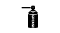

HANDBOKENS ANVÄNDNING
B3E000000001W01
Ämnesområden
• Den här handboken beskriver arbetsgången vid alla nödvändiga service- och reparationsarbeten. Arbetsmomenten är indelade i följande huvudsakliga områden:
-
- Demontering/montering
-
- Isärtagning/ihopsättning
-
- Byte
-
- Kontrollpunkt
-
- Justering
• Enkla arbetsmoment som lätt kan utföras genom att titta på bilen (som exempelvis demontering/montering av delar, upphissning och lyftning av fordonet, rengöring och okulärbesiktning) har utelämnats.
Arbetsgång
Kontroll, justering
-
• Kontroll- och justeringsprocedurer är uppdelade i steg. Viktiga punkter som berör placering av delar och utförande av arbetsmomenten beskrivs i detalj och visas med hjälp av bilder.
Arbetsgång vid reparation
1. De flesta reparationsarbeten inleds med en översiktsbild. Bilden identifierar de olika delarna, visar hur delarna sitter ihop och beskriver hur man inspekterar delarna visuellt. Endast de demonterings/monteringsmoment som måste utföras i en bestämd ordning har skrivna instruktioner.
2. Översiktsbilden visar slitdelar, åtdragningsmoment och symboler som anger smörjställen för olja, fett och tätningsmedel. Dessutom visas också symboler för delar som kräver specialverktyg eller liknande.
3. Arbetsmomenten är numrerade och det viktigaste momentet i arbetet visas i bild, märkt med motsvarande nummer. Ibland kan det också finnas viktiga punkter eller extra information om vissa moment. Läs igenom denna när du utför service på den aktuella delen.
Symboler
• Det finns åtta symboler som anger olja, fett, vätskor, tätningsmedel och användning av specialverktyg eller motsvarande. Dessa symboler visar på applikationspunkter eller användningen av dessa material under service.
|
Symbol
|
Betydelse
|
Typ
|
|
|
Smörj med olja
|
Ny lämplig motorolja eller växellådsolja
|
|
|
Fyll på med bromsvätska
|
Ny bromsvätska av rätt typ
|
|

|
Använd automatväxellådsolja
|
Ny automatväxellådsolja av rätt typ
|
|

|
Använd fett
|
Lämpligt fett
|
|
|
Använd tätningsmedel
|
Lämpligt tätningsmedel
|
|
|
Använd vaselin
|
Lämpligt vaselin
|
|
|
Byt delen
|
O-ring, packning, etc.
|
|

|
Använd specialverktyg eller jämförbart
|
Lämpliga verktyg
|
Extra information
• Det finns ett flertal Varningar, Försiktighetsuppmaningar, Observera, Specifikationer och Övre och undre gränsvärden i denna handbok.
Varning
-
• En varning visar på en situation där allvarliga personskador eller dödsfall kan bli följden om varningen ignoreras.
Försiktigt
-
• Försiktigt visar på en situation där fordonet eller delar kan skadas om varningen ignoreras.
Observera
-
• Ett "Observera" ger dig ytterligare information som kan hjälpa dig att utföra arbetsmomentet.
Specifikation
-
• Värdena anger det tillåtna intervallet vid inspektion och justering.
Övre och undre gränser
-
• Värdena anger övre och undre gränser som inte får överskridas vid inspektion eller justering.
Felsökning
Normal felsökningsprocedur
DTC-felsökningsflöde (felkoder) (inbyggt diagnostiksystem)
-
• Felkoderna (DTC) ger viktig information då fel som är svåra att provocera fram ska repareras. Utför en kontroll med hjälp av DTC för att snabbt och noggrant diagnostisera ett fel.
-
• Diagnostikfunktionen används i samband med översyn av bilen. Om en felkod (DTC) som anger en felorsak visas, fortsätter man översynen med hjälp av de kontrollpunkter som anges av diagnosfunktionen.
Diagnostabell
-
• Diagnostabellen innehåller olika felsymptom. Välj det symptom som stämmer bäst med det aktuella felet.
Snabbdiagnostabell (vid hänvisning)
-
• Snabbdiagnostabellen listar diagnostik- och översynsprocedurer som särskilt gäller för vissa typer av fel.
Symptom felsökning
-
• Felsökning med hjälp av symptom används för att snabbt ta reda på var felet ligger, beroende på vilka symptom som uppträder.
Användning
Allmän översyn (Avsnitt 05)
-
• Gör en allmän översyn innan du fortsätter med felsökning med hjälp av symptom.
-
• Utför stegen i den angivna ordningen.
-
• Kolumnen med hänvisningar anger var det finns detaljerade beskrivningar av de olika allmänna översynsmomenten.
-
• Även om du utför kontroller och justeringar enligt referenskolumnen, bör du fortsätta gå igenom proceduren i kolumnen med åtgärder, om felorsaken upptäcks under den allmänna översynen.
Med hjälp av felsökning från felkoder (DTC)
-
• Felsökning från felkoder (DTC) visar diagnostikåtgärder, kontrollmetoder och lämpliga åtgärder att vidta för respektive felkod (DTC).
Med diagnostabellen
-
• Symptomen på olika fel listas i diagnostabellen och gör det möjligt att felsöka systemen.
-
• Den detaljerade informationen används för att identifiera exakt symptom.
Med snabbdiagnostabellen
-
• Snabbdiagnostabellen anger förhållandet mellan symptom och möjliga felorsaker.
-
• Tabellen är praktisk för att snabbt ringa in förhållandet mellan symptom och felorsak. Den anger också var det huvudsakliga felet finns vid flera felsymptom.
-
• Välj de kontroller som ska göras för det aktuella felet genom att titta i den kolumn i tabellen som visar diagnosmomenten.
Använda symptomfelsökning
-
• Felsökning med hjälp av symptom visar diagnosprocedurer, kontrollmetoder och rätt åtgärder för varje typ av felsymptom.